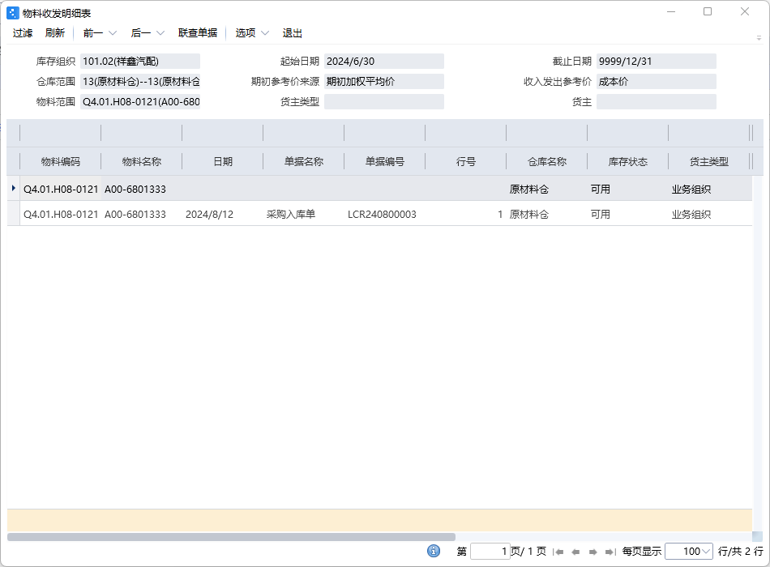

委外订单流程
委外到入库流程
金蝶ERP创建委外订单
- 输入物料编码、计划时间、数量等数据，提交审核
- 同步生成委外用料清单
- 选中物料后手动下推采购订单和委外领料单
- 注：不用手动下推收料通知单
金蝶ERP委外领料单
- 进行提交审核
- 确认库存量是否足够
金蝶ERP采购订单
- 进行提交审核
- 注：不用手动下推收料通知单
MES仓库管理–供应商管理–供应商生成物料条码
- 选择采购单号，输入数量进行物料唯一码打印
- 切换物料编码进行多次打印
MES仓库管理–供应商管理–生成送货单
- 选择采购订单，以此扫描打印的物料唯一码
- 如采购订单流程处：在报告文件上传处必须上传文件，文件格式为：采购单号-数字，如：LCD240800004-1.png **如果未上传IQC查询不到送货单
PDA仓库管理–仓库收料
- 扫描送货单选择单据后，扫描仓库下面的库位条码然后再扫描物料唯一条码
- 扫描完成后点击收料
- 提交后会在金蝶ERP自动创建收料通知单
MES品质管理–检验报告管理–IQC来料检查
- 扫描采购订单后勾选物料进行IQC接收，接收后进行来料检验
- 检验合格后审核提交
PDA仓库管理–物料入库
- 扫描仓库下面的库位条码，然后再扫描物料唯一条码
- 完成后点击物料条码入库
入库完成后可以在金蝶即时库存查看库存
- 筛选入库的物料编码查询选择库的仓库，点击库存量查看详细
- 
- 能查询到入库数量就属于MES推送ERP完成
流程图

本博客所有文章除特别声明外，均采用 CC BY-NC-SA 4.0 许可协议。转载请注明来自 黄少的博客！